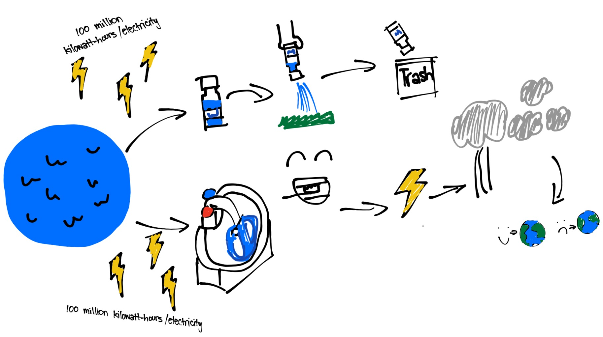
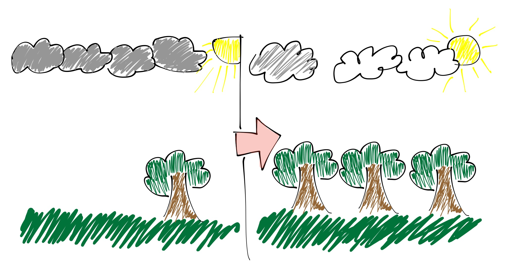

For my Final Data Project, I had to choose a topic where data could help make predictions or recommendations. The topic I chose was Global Warming. In this case, data could help us decide how to try and reduce global warming.
The diagram shows you that if you save water, 100 million kilo-watt hours of electricy can be saved each year. as shown, two ways to save water is:
-To not dump out an almost full water bottle-if you know you cannot bring it somewhere, drink it beforehand!
-When you are brushing your teeth, turn off the water! After you finish, then you could turn it back on.
This diagram shows that the ore trees there are, the more carbon dioxide can be "taken out" of the air. Data can help prove this because scientists have found out that trees take in carbon dioxide (as well as sunlight,water, etc.), and they produce oxygen. However, you would need many trees and have to wait many years for this solution to reach the point where it itself could help a lot.